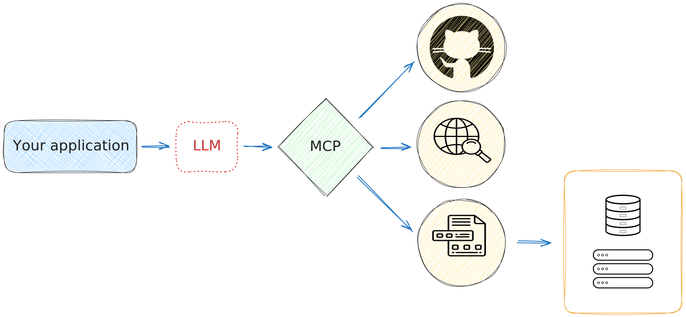
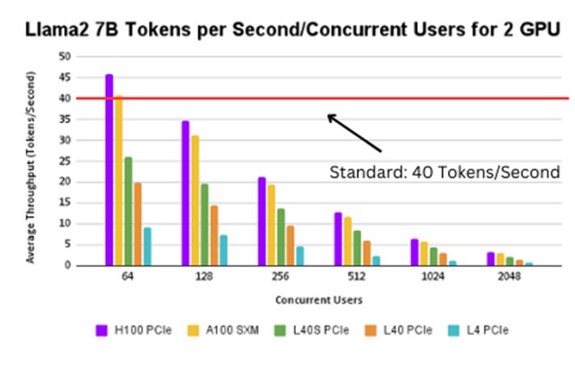

AI for software development
- Research engineer in scientific computing at CNRS
- Co-leader of the HPC@Maths team
- Member of the groupe Calcul board
- Developer of open-source software


Large language model (LLM) history
What LLM can we use ?
Why use AI for software development ?
Learderboards

Learderboards

Other leaderboards
- Code evaluation
- Mathematics abilities
Learderboards
How to use them ?
- LLM server : vLLM, Ollama
- Chat : Open WebUI, Msty
- IDE : VS Code, Cursor, Windsurf
- VS Code plugins: GitHub Copilot, Roo Code, Continue
- Tools : LangChain, LangGraph, PydanticAI
What are the limitations of this approach ?
- The model doesn’t know anything about your domain.
- Is the knowledge of your programming language is sufficient ?
- You can only use one model at a time.
- Interaction is mandatory: AI can’t act on its own.
What do we want to achieve ?
How enrich a generic LLM model ?

- Web search (Tavily, DuckDuckGo, Brave, …)
- Python script execution
- GitHub interactions
- …
Multimodal perception
Agent

Model Context Protocol (MCP)
MCP is an open protocol that standardizes how applications provide context to LLMs. Think of MCP like a USB-C port for AI applications. Just as USB-C provides a standardized way to connect your devices to various peripherals and accessories, MCP provides a standardized way to connect AI models to different data sources and tools.

2025: the year of the agents
- Create several AI agents that work together.
- Each agent is specialized (web search, code analysis, unit test creation, …).
- Each agent can use an LLM model suitable for its purpose.
- New members can be added to the team.

Computational resources
The key elements :
- the number of parameters of the LLM model (7B, 70B, …)
- the precision (FP32, FP16, FP8, INT8, …)
- the throughput (tokens/s)
The commonly accepted range is 10 to 50 tokens per second per user,
but this is highly dependent on usage.
Computational resources
Code generation for software development teams
Scenario: A development firm employs an AI-driven tool that aids developers by suggesting code blocks and facilitating debugging in real-time. This tool is versatile, supporting a variety of coding tasks—from autocomplete of code snippets to generating entire code blocks based on minimal inputs. It is also integral in real-time peer review systems, offering on-the-fly optimizations and corrections, and serves as an educational aid that dynamically generates coding examples tailored to the user’s current learning topic. This multi-functional capability ensures that developers can enhance productivity and accuracy in their coding projects, making the tool essential for modern software development environments.
Established throughput baseline: 40 tokens/second - This higher rate is necessary to manage the heavy data processing and output demands in code generation, ensuring developers experience minimal lag time. This substantial rate accommodates the dense token requirements typical of coding environments, where both input queries and output suggestions are often complex and lengthy. Code generation processes not only necessitate parsing extensive programming syntax but also generating accurate, contextually appropriate code responses. This ensures that developers can iterate and test code rapidly without delays, significantly enhancing productivity.
Computational resources

Model limitation
- The context is still too small.
- Not all models know how to use the tools.
- The models are trained on popular programming languages (Python, JavaScript, etc.). The quality of responses in some languages can be very bad.
- The processing chain can become very long, considerably increasing response times.
While the arrival of AI agents opens up a wide range of possibilities in software development, it also raises many questions. Here are just a few of them
Who is the owner of the code produced by AI?
What impact will the use of LLMs have on the skills of junior developers?
What is the impact on code quality and security?
What is the ecological footprint of the massive use of AI in all sectors of the economy?
Thank you
Credits
- https://app.napkin.ai/
- https://thenounproject.com/icon/open-source-7771120/
- https://thenounproject.com/icon/artificial-intelligence-6262207/
- https://thenounproject.com/icon/proprietary-software-7179209/
- https://thenounproject.com/icon/file-server-6842823/
- https://thenounproject.com/icon/web-search-7657599/
Forum ORAP -  - 20 May 2025
- 20 May 2025